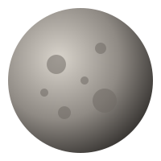
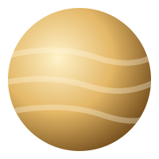
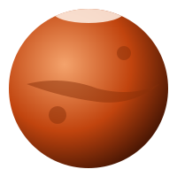

| Fact | Mercury | Venus | Earth | Mars |
|---|---|---|---|---|
| Appearance |  |
 |
 |
|
| Diameter km | 4,879 | 12,104 | 12,756 | 6,792 |
| Mass 1024 kg | 0.330 | 4.87 | 5.97 | 0.642 |
| Surface Gravity m/s2 | 3.7 | 8.9 | 9.8 | 3.7 |
| Distance from Sun 106 km | 57.9 | 108.2 | 149.6 | 228.0 |
| Orbital Period days | 88.0 | 224.7 | 365.2 | 687.0 |
| Length of Day hours | 4,222.6 | 2,802.0 | 24.0 | 24.7 |
| Mean Temperature °C | 167 | 464 | 15 | -65 |
Worth Noticing
- Venus is the hottest planet, not Mercury. Its thick carbon dioxide atmosphere traps heat, pushing the average surface temperature to 464 °C.
- A day on Mercury lasts longer than its year. One full day-night cycle takes about 176 Earth days, twice its 88-day orbit.
- Earth and Venus are near twins in size, only about 650 km apart in diameter, yet they could not be more different on the surface.